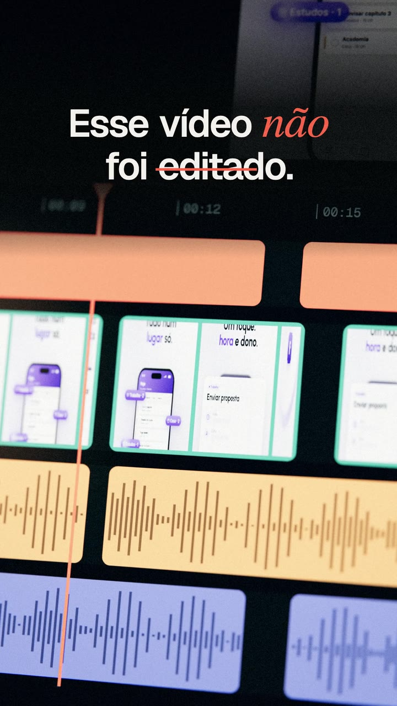

1 · gancho

2 · "foi programado"

6 · cena na palavra

9 · 60 fps

10 · "custa zero"

12 · chamada final
exemplos/bancada.Este é o passo a passo para produzir anúncios em vídeo vertical (9:16) a partir de código: você escreve o roteiro, a IA narra, e cada cena entra na palavra falada, em 3D fotorrealista e a 60 fps. Tudo é gratuito e de código aberto, do roteiro ao MP4, e roda no Windows, no macOS e no Linux. O kit está em github.com/FilipeMolinariMoura/fabrica-de-criativos.
Ao longo do guia: Dica é atalho, Atenção evita retrabalho, Por quê explica a regra. Todo número vem marcado como medido ou estimado. Os comandos npm run … são iguais nos três sistemas.
Escreva o roteiro. A IA narra. O código filma. E não custa nada. A Fábrica de Criativos é um método e um kit de código aberto para produzir anúncios com qualidade de estúdio sem abrir um editor de vídeo e sem pagar nenhuma ferramenta.

exemplos/bancada.window.seek(t) desenha o quadro t. O mesmo código gera sempre o mesmo MP4.| Peça | O que faz |
|---|---|
| Referências | 12 regras com números, lidas de 17 filmes de lançamento |
| Look-dev | A aparência aprovada antes de construir |
| 3D fotorrealista | Lente, desfoque e sombra de verdade, de 192 a 768 amostras por quadro |
| Voz dirigida | Tom aprovado em amostras curtas |
| Crítica independente | Quem constrói não aprova sozinho |
Conferência automática prova que o vídeo está correto: resolução, quadros, loudness. O método vai além e mira em "parece filme de produto": quadro cheio, preto profundo, cortes secos na palavra, câmera sempre em movimento, luz com sombra. Cada uma dessas qualidades vira número, e cada número é medido antes da entrega.
Cada etapa do método tem um caminho gratuito que roda no seu computador, com software livre e modelos de IA abertos. Sem assinatura, sem créditos, sem marca d'água.
| Etapa | Ferramenta gratuita | Licença | Custo |
|---|---|---|---|
| Agente de IA roteiro e cenas | Ollama com qwen3-coder ou gpt-oss, usado pelo Claude Code (ou OpenCode, Aider, Qwen Code) | MIT · Apache-2.0 | R$ 0 |
| Voz | Kokoro-82M, local, vozes em português do Brasil | Apache-2.0, uso comercial liberado | R$ 0 |
| Palavras no tempo | Whisper e Praat, locais | MIT · GPL | R$ 0 |
| Cenas 3D e 2D | three.js e os motores do projeto; HDRI, texturas e fontes livres | MIT · CC0 · OFL | R$ 0 |
| Trilha e efeitos | Sintetizados em código, presos às palavras | MIT | R$ 0 |
| Render e entrega | Chromium (Playwright) e FFmpeg: 60 fps, −14 LUFS | Apache-2.0 · LGPL | R$ 0 |
| Total, do roteiro ao MP4 | R$ 0 | ||
Outra voz gratuita, na nuvem: a Fish Audio, com o modelo s2.1-pro-free e muitas vozes em português. As contas gratuitas, clique a clique, estão no capítulo 3.
Faz exatamente esse caminho e entrega um anúncio pronto em poucos minutos: voz gratuita, trilha, efeitos, mixagem e render.
O Ollama roda modelos abertos no seu computador com uma API compatível com a da Anthropic. Instale o Ollama (ollama.com/download) e o Claude Code (npm install -g @anthropic-ai/claude-code), baixe o modelo e aponte o Claude Code para ele.
ollama pull qwen3-coder:30b
ollama serve # deixe rodando; no Windows e no macOS o aplicativo já faz isso
export ANTHROPIC_BASE_URL=http://localhost:11434 export ANTHROPIC_AUTH_TOKEN=ollama export ANTHROPIC_API_KEY="" claude --model qwen3-coder:30b
$env:ANTHROPIC_BASE_URL="http://localhost:11434" $env:ANTHROPIC_AUTH_TOKEN="ollama" $env:ANTHROPIC_API_KEY="" claude --model qwen3-coder:30b
| Memória da máquina | Modelo sugerido | Como usar |
|---|---|---|
| 16 GB | gpt-oss:20b | Uma etapa do método por pedido |
| 32 GB | qwen3-coder:30b | O ponto de equilíbrio |
| 64 GB ou mais | Modelos maiores da família Qwen3 | Tarefas mais longas de uma vez |
Peça uma etapa por vez, citando os arquivos. Comece copiando um exemplo que funciona. Use um agente separado como crítico: a independência vale mais que o tamanho do modelo. Contexto de 32 mil tokens ou mais.
Os comandos npm run … bastam para rodar os exemplos e fazer um anúncio novo. O agente ajuda a escrever o roteiro e a criar cenas novas.
O caminho gratuito quase não pede cadastro: agente, voz local, 3D e trilha rodam no seu computador. Os serviços na nuvem que o kit usa, ou que você pode querer experimentar, têm conta gratuita. Nenhum pede cartão de crédito.
As chaves ficam no arquivo .env, na pasta do projeto. Crie-o uma vez com cp .env.example .env (macOS e Linux) ou copy .env.example .env (Windows), abra num editor de texto e cole cada chave depois do = da variável certa. O .env nunca vai para o repositório; não cole chaves no chat com o agente.
De graça: modelos abertos no seu computador, sem limite de uso.
ollama.com/download e instale a versão do seu sistema.ollama pull qwen3-coder:30b (32 GB) ou ollama pull gpt-oss:20b (16 GB).Chave: nenhuma; o Claude Code se conecta pelas variáveis do capítulo 2.
Ollama MIT; Qwen3-Coder e gpt-oss Apache-2.0.
De graça: narração local em português do Brasil, sem limite: pf_dora, pm_alex, pm_santa.
uv run scripts/voz_kokoro.py <id> pf_dora 3 --roteiros <roteiro.json>.Chave: nenhuma.
Apache-2.0, uso comercial permitido.
De graça: plano gratuito com créditos mensais e o modelo s2.1-pro-free na API, padrão de voz_fish.mjs e voz_por_frase.py. Muitas vozes em português.
fish.audio e clique em Sign up (Google ou e-mail).Onde colar: FISH_API_KEY= no .env. Confira com node scripts/voz_fish.mjs vozes.
Confira os termos do plano antes de usar em anúncio pago.
De graça: cerca de 10 mil créditos por mês. Com cerca de 1 crédito por caractere, dá para narrar vários anúncios de 30 s e testar o tom.
elevenlabs.io e clique em Sign up.Onde colar: ELEVENLABS_API_KEY= no .env. Confira com node scripts/eleven.mjs conta.
O gratuito pede atribuição e é para uso não comercial; para anúncio pago, o Starter (a partir de US$ 6 por mês) inclui licença comercial.
De graça: alguns modelos abertos têm versão :free, com cota diária de pedidos. Alternativa ao Ollama em máquinas com pouca memória.
openrouter.ai e clique em Sign up.O código e os pedidos vão para o serviço; confira a página de limites.
Hugging Face (huggingface.co): só se algum modelo pedir login para baixar; o Kokoro não pede. Token em Settings → Access Tokens, leitura.
GitHub (github.com/signup): para dar fork, marcar com estrela e versionar os seus anúncios.
Google Fonts (OFL), Poly Haven e ambientCG (CC0): sem conta, download direto. Claude Code: instalação gratuita; com o Ollama, sem conta da Anthropic.
| Serviço | Conta | Custo |
|---|---|---|
| Ollama, Claude Code, Kokoro, Whisper | Não precisa | R$ 0 |
Fish Audio, s2.1-pro-free | Gratuita | R$ 0 |
| ElevenLabs, OpenRouter (opcionais) | Gratuita | R$ 0 |
| GitHub, Hugging Face | Gratuita | R$ 0 |
| Fontes, HDRIs e texturas | Não precisa | R$ 0 |
| Custo total | R$ 0 | |
--mais 8:5).voz/<id>/: a aprovada não precisa ser gerada de novo.scripts/trilha.py.Quatro passos, uma vez por computador. Não precisa saber programar: é copiar e colar no terminal.
git clone https://github.com/FilipeMolinariMoura/fabrica-de-criativos.git cd fabrica-de-criativos
powershell -ExecutionPolicy Bypass -File instalar\windows.ps1
Usa o winget: Git, Node.js LTS, FFmpeg e uv. Depois, npm install, o Chromium do Playwright e o openai-whisper. Ao terminar, feche e abra o PowerShell de novo.
bash instalar/macos.sh
Usa o Homebrew (instala se faltar, pedindo a senha do Mac). Whisper: mlx-whisper no Apple Silicon, openai-whisper no Intel.
bash instalar/linux.sh
Usa o apt e pede a senha de administrador (sudo). Instala também as dependências do Chromium.
npm run verificar # ✔ em cada item: Node, FFmpeg, uv, Chromium, Whisper, placa de vídeo npm run demo # anúncio de exemplo completo → entrega/previas/demo-previa.mp4 npm run contato -- exemplos/bancada # um quadro de cada plano do filme 3D npm run previa -- exemplos/bancada --sem-audio # prévia do 3D, sem refazer o áudio
Não instale o Python à parte. O uv baixa a versão que cada script pede (3.10 a 3.12) e as bibliotecas dele na primeira execução. A primeira narração demora mais: baixa o Kokoro, o PyTorch (cerca de 1 GB) e o modelo de voz (cerca de 330 MB).
A própria linha do npm run verificar diz o que fazer. As causas mais comuns no Windows (política de execução, winget ausente, PATH antigo, antivírus) estão no apêndice B.
No macOS e no Linux, os mesmos comandos também existem como make (make demo, make contato3d FILME=exemplos/bancada); make ajuda lista todos.
Tudo o que o instalador coloca no computador, com o mínimo que funciona e a versão de referência. Roda em Windows 10 e 11, macOS e Linux; npm run verificar confirma tudo, inclusive a placa de vídeo.
| Item | Mínimo | Recomendado |
|---|---|---|
| Memória | 8 GB | 16 GB |
| Placa de vídeo | Qualquer uma com WebGL 2; a integrada serve | Dedicada ou Apple Silicon |
| Disco | 3 a 5 GB | 10 GB, para guardar renders |
| Sistema | Windows 10 (22H2) ou 11 · macOS 13+ · Ubuntu 22.04+, Debian 12+ | |
| Linguagem | Onde |
|---|---|
| JavaScript Node.js, módulos ES | Cenas, motores 2D e 3D, render, efeitos, mixagem e a linha de comando |
| Python | Voz, conferência da fala, trilha, folhas de contato |
| HTML e CSS | A página de cada filme e este guia |
| Shell (opcional) | Atalhos make no macOS e no Linux |
| Programa | Requisito | Referência | Para quê |
|---|---|---|---|
| Node.js | 20 ou mais novo | 22.23 | Motor, render e os comandos npm run |
| npm | vem com o Node.js | 10.9 | Bibliotecas JavaScript |
| uv | 0.5 ou mais novo | 0.13 | Roda os scripts Python e baixa o Python certo |
| Python | 3.10 a 3.12, via uv | 3.11 | Voz, trilha, medições |
| FFmpeg | 6 ou mais novo | 6.0 | Codifica o vídeo, mixa e mede o áudio |
| Chromium (Playwright) | instalado pelo instalador | Playwright 1.65.1 | Desenha cada quadro na placa de vídeo |
| Whisper | mlx-whisper (Mac Apple Silicon) ou openai-whisper | mlx-whisper 0.4.3 | Marca o instante de cada palavra |
| Git | qualquer recente (opcional) | — | Baixa o projeto |
| Biblioteca | Linguagem | Versão | Para quê |
|---|---|---|---|
| three.js | JavaScript | 0.187.0 | Cenas 3D, materiais físicos, luz |
| Playwright | JavaScript | 1.65.1 | Controla o navegador que renderiza |
| motion-reel | JavaScript e Python | 1.3, incluída | Motor 2D, efeitos sonoros, mixagem |
| Kokoro | Python | 0.9.4 ou mais nova | Voz gratuita, local (com PyTorch) |
| NumPy · SciPy · soundfile | Python | atuais | Áudio e sinais |
| librosa | Python | 0.10 ou mais nova | Ritmo da trilha |
| Parselmouth (Praat) | Python | atual | Entonação no fim das frases |
| Pillow | Python | atual | Folhas de contato |
Cada script Python declara no cabeçalho as bibliotecas de que precisa, e o uv as instala sozinho na primeira execução.
Cada etapa produz um arquivo que a seguinte consome, e tem um portão de qualidade: uma condição objetiva para seguir. Dá para voltar a qualquer ponto sem refazer o resto.
| # | Etapa | Sai daqui com | Portão de qualidade |
|---|---|---|---|
| 1 | Briefing | briefing.md | Escopo confirmado: o que exatamente está sendo anunciado |
| 2 | Referências | Tabela, regras, análise de lacunas | Cada regra tem número; cada lacuna tem medida |
| 3 | Roteiro | roteiro.json | Texto aprovado antes de gerar a voz |
| 4 | Voz dirigida | Tomadas em voz/<id>/ | Tom e tomada final aprovados de ouvido |
| 5 | Narração no tempo | vo.wav e vo.json | Todas as palavras encontradas, nenhuma frase cortada |
| 6 | Look-dev | 4 quadros e 4 s de movimento | Avaliação de realismo registrada; quadros aprovados |
| 7 | Filme | film.js | Função pura do tempo; cortes saem de palavras |
| 8 | Som | mix.wav | −14 LUFS, pico ≤ −1 dBTP, música audível nos intervalos |
| 9 | Crítica independente | Ajustes com números | Todos os critérios ≥ 8 |
| 10 | Render e entrega | MP4 em entrega/finais/ | npm run checar passa |
Antes do roteiro, confirme o que está sendo anunciado: um produto específico ou a marca inteira. É a decisão que mais pesa em todo o resto.
Construa um criativo completo, aprove, e só então produza os demais a partir dele.
Tudo o que entra na produção, agrupado pela função. Cada peça tem um caminho gratuito; os serviços pagos aparecem como opção.
| Ferramenta | Para que serve | Custo |
|---|---|---|
| Orquestração | ||
| Ollama + modelo aberto qwen3-coder, gpt-oss | Um modelo de pesos abertos na sua máquina, com API compatível com a da Anthropic. | Grátis, local |
| Claude Code app ou CLI | O agente que conduz a produção: escreve roteiro e código, roda comandos, olha as folhas de contato e corrige. Funciona com o Ollama. | Grátis com Ollama |
| Subagentes | Um agente por criativo depois do piloto, e os críticos independentes (capítulo 16). | Mesmo modelo |
| Imagem | ||
Motor 3Dlib/3d · three.js | Câmera de acumulação, estúdio com luz de área, materiais físicos, aparelhos genéricos modelados em código. | Grátis |
Motor 2Dlib/cena.js | Primitivas de motion em canvas: títulos, vidro, pílulas, cursor, celular, transições. | Grátis |
| motion-reel em vendor/ | Harness do filme como função do tempo; render 2D, efeitos sonoros e mixagem. | Grátis |
| Playwright + FFmpeg | Abre o filme no Chromium, captura quadro a quadro e codifica em H.264. | Grátis |
| HDRI, texturas, fontes | Um HDRI de estúdio, madeira e digitais (CC0); Geist e Instrument Serif (OFL). | Grátis |
| Voz | ||
| Kokoro-82M | Narração local com vozes de português do Brasil. Apache-2.0, uso comercial liberado. | Grátis, local |
| Fish Audio | Modelo gratuito na nuvem (s2.1-pro-free), com biblioteca grande de vozes em português. | Grátis, uso justo |
| Whisper + Praat | Filtro às cegas (palavra e tom no fim da frase) e o tempo de cada palavra. | Grátis, local |
| ElevenLabs | Voz de locutor dirigida com marcações de tom (capítulo 18). | Opcional |
| Som e pesquisa | ||
| uv + Python | Compõe a trilha em código e faz as medições de áudio. | Grátis |
| Miniaturas do YouTube | Leitura de ritmo, quadro e luz de um filme de referência sem baixá-lo. | Grátis |
| Biblioteca de anúncios | Anúncios ativos de uma marca por dias no ar (conector AdWhispr). | Opcional |
| Arquivo | Faz |
|---|---|
fabrica.mjs | Por trás dos npm run: verificar, demo, novo, contato, previa, final, audio, checar. Iguais nos três sistemas. |
instalar/ | Instaladores para Windows (winget), macOS (Homebrew) e Linux (apt). |
voz_kokoro.py · voz_fish.mjs | Narração gratuita, local e na nuvem. |
voz_por_frase.py · voz_dialogo.py | Vários candidatos por frase com escolha às cegas; montagem em diálogo. |
voz_avaliar.py · vo_montar.py | O filtro às cegas; a voz tratada e o tempo de cada palavra (vo.json). |
trilha.py | Compõe a trilha sob a narração: tensão, virada na palavra, impacto no CTA. |
variante.py | Variação de cor, estilo ou voz no motor 2D, sem reescrever o filme. |
voz_dirigida.py · trilha_eleven.py | Voz dirigida e música produzida na ElevenLabs (opcionais). |
O roteiro decide a maior parte do resultado. Escreva para o ouvido e para o polegar: uma ideia por cena, frases curtas, um gancho que para a rolagem.
Anúncios ativos de ferramentas criativas e de IA, ordenados por dias no ar numa biblioteca pública de anúncios. Dias no ar é um bom indício de anúncio que funciona.
| Família | Exemplo observado | Dias no ar |
|---|---|---|
| "Você ainda faz do jeito antigo?" | "It's 2026, if you're still manually recording your voiceovers…" | 270 |
| Número concreto | "Cut your editing time from 4 hours to 4 minutes" | 228 |
| "Isto é diferente do que parece" | "Esto no lo estoy grabando yo." | 64 |
| Desafio ao espectador | "Un plan dans cette vidéo n'existe pas. Tu l'as repéré ?" | 56 |
Coleta em 16 nov. 2026, pelo primeiro quadro e o texto de cada anúncio.
| Rascunho | Roteiro final | Técnica aplicada |
|---|---|---|
| Esse vídeo não foi editado. Ele foi programado. | igual | Gancho de uma família que dura no ar |
| Sem timeline. | Ninguém abriu um editor. | Uma imagem que dá para filmar, no lugar do jargão |
| Outra cor. Outro estilo. Outra voz. | Quer outra cor? Outro estilo? Outra voz? | Perguntas dão à voz três finais subindo |
| …com o áudio no padrão das redes. | …pronto pra postar. | Especificação vira benefício |
| E dá pra fazer tudo de graça… | E custa zero: os modelos são abertos. | Mais curto, é número, e os dois-pontos criam a pausa |
Feche o roteiro antes de gerar a voz. E se o roteiro afirma algo sobre o próprio vídeo ("foi programado", "custa zero"), o vídeo cumpre: aqui, cada quadro é renderizado por código.
"Quero que pareça caro" vira trabalho quando vira número. Esta etapa transforma a impressão em regras com números de partida, sem baixar nenhum vídeo.
Números de partida para 1080×1920, lidos de 17 referências e afinados no look-dev.
| # | Regra | Números de partida |
|---|---|---|
| 1 | Encha o quadro | Objeto principal em 55% a 75% da largura; 60% da área trabalhada; o terço de baixo é chão com reflexo |
| 2 | Lente longa | Herói em 85 a 100 mm; macro em 100 a 135 mm; geral no máximo em 50 mm |
| 3 | Um plano nítido só | f/1,8 a f/2,8 em macro, f/4 nos gerais e no herói com tela; o foco está na palavra dita |
| 4 | A câmera nunca para, e nunca corre | Empurrão de 2% a 6% ou órbita de 3° a 8° em todo plano; no máximo três movimentos fortes |
| 5 | Luz de estúdio com três papéis | Principal suave, contraluz 1 a 2 stops acima, preenchimento negativo; relação de 4:1 a 8:1 |
| 6 | Matéria tem defeito | Toda aresta com raio; rugosidade variando; digitais no vidro a poucos por cento |
| 7 | Tela é luz e é legível | Inclinada de 8° a 25°; texto a ler com 30 px ou mais; o resto fora de foco de propósito |
| 8 | Tipografia fina | Duas famílias; caixa mista; maiúscula em 3,8% a 4,8% do quadro; até 5 palavras, uma de acento |
| 9 | Uma base, um acento | Acento em até 8% da área; no ato escuro, percentil 5 de luminância ≤ 8/255 |
| 10 | Textura de lente | Grão de 3% a 5%; vinheta de 12% a 18%; bloom baixo e só em emissivos |
| 11 | Montagem com intenção | De 10 a 12 planos em 30 s; quadro 0 pronto; corte 2 quadros antes da palavra; zero fusão |
| 12 | Todo evento visual tem som | Quase silêncio de 150 a 250 ms antes da virada; master em −14 LUFS (convenção do gênero) |
O tratamento é uma frase e uma tabela de planos. A frase deste projeto: o filme se passa num estúdio de produto, sobre uma bancada, e tudo o que o roteiro cita vira objeto físico.
Os números são o ponto de partida, e o look-dev os afina. Exemplo: num celular com tela legível, f/4 mantém o texto inteiro nítido e ainda separa o fundo.
Uma narração correta informa; uma narração dirigida convence. O segredo não é o motor: é o processo. Ele vale para a voz gratuita e para a paga.
O filtro às cegas (Whisper para as palavras, Praat para o tom no fim da frase) descarta palavra errada e afirmação que termina como pergunta. Naturalidade e emoção são trabalho do ouvido. Por isso o ouvido de uma pessoa dá a palavra final.
| Motor | Destaque | Custo | Use para |
|---|---|---|---|
| Kokoro-82M | Voz natural e clara; local, sem conta; repetível; uso comercial liberado | Grátis | O anúncio completo sem custo, npm run demo, muitas variações |
Fish Audio s2.1-pro-free | Interpretação expressiva; muitas vozes em português; controle frase a frase | Grátis, uso justo | O anúncio completo sem custo, com muitas opções de timbre |
ElevenLabs eleven_v3 | Interpretação de locutor dirigida com marcações de tom | Opcional | Quando o anúncio pede emoção dirigida frase a frase |
uv run scripts/voz_kokoro.py c01 pm_alex 3 --roteiros roteiros/roteiros.json
uv run scripts/voz_avaliar.py voz/<pasta> ordena as tomadas e descarta erro objetivo.| Recurso | Exemplo | Efeito |
|---|---|---|
| Pausa | reticências, dois-pontos | Silêncio antes da palavra que importa. Funciona em todos os motores |
| Frase curta e afirmativa | "Ele foi programado." | Leitura firme em qualquer voz |
| Números por extenso | "sessenta quadros por segundo" | Pronúncia certa |
| Marcação de tom (ElevenLabs v3) | [serious] [warmly] [curious] [excited] | Muda a interpretação até a próxima marcação |
| Ênfase (ElevenLabs) | Esse vídeo... NÃO foi editado. | Uma palavra em caixa alta por frase |
O roteiro aprovado fica limpo. O texto dirigido é outro campo (falas_dirigidas). O filtro confere contra o limpo. Trocar de voz depois não muda nada no filme: as cenas seguem as palavras.
Em português, prefira vozes nativas do idioma: as três do Kokoro são brasileiras, e a Fish Audio tem dezenas. Evite vozes que imitam pessoas reais.
A técnica central do método: nada no filme tem segundo fixo. Tudo começa numa palavra.
uv run scripts/vo_montar.py <pasta-do-filme> voz/<id>/<tomada>.wav --tempo 1.10 --pausa-max 0.36
O script trata o áudio, acelera de leve, encurta pausas longas e grava vo.json com cada palavra e cada frase no tempo. No filme:
const tVirada = wt('programado'); // quando a transcrição marca a palavra
const tGolpe = on('programado'); // quando a palavra é OUVIDA (início de energia no áudio)
const corte = wt('ele') - 2 / 60; // o corte vai dois quadros antes da palavraO olho precisa de um instante para ler a imagem nova: corte dois quadros antes. O impacto vai no início audível da palavra.
O tempo de palavra do Whisper fica de 50 a 235 ms antes do som, com média perto de 140 ms (medido). Para o que precisa bater, use o início medido no áudio, ou t0 + 0,10 s.
Antes de construir 30 segundos, construa quatro quadros. É o jeito mais barato de responder à pergunta que mais importa num anúncio: isto parece caro?


| # | O que | Por que pesa |
|---|---|---|
| 1 | Desfoque de lente por acumulação | Vidro atrás de vidro e reflexo no chão desfocam certo, sem truque |
| 2 | Pretos de verdade | Percentil 5 medido em 6/255 e 4/255 nos quadros escuros |
| 3 | Brilho só do ambiente no que é liso | Vidro e metal polido ficam limpos, sem pontinhos de luz |
| 4 | Um softbox por plano, por cálculo | A faixa de luz no canto da tela fica onde aquela câmera a vê |
| 5 | Digitais no vidro | Só aparecem onde há reflexo. É o detalhe que mais "vira foto" |
| 6 | Chão com reflexo renderizado | O reflexo endurece perto do contato e se desfaz longe |
| 7 | Bloom só de emissivos | No mundo claro, o fundo continua limpo |
Desgaste e poeira nos objetos metálicos, aresta de vidro com espessura variável e luz rebatida simulada com uma fonte suave sob os objetos aproximam ainda mais o mundo claro de uma fotografia.
Rasterização comum em three.js, repetida muitas vezes por quadro, com uma coisa diferente a cada vez. A soma dá desfoque de lente, desfoque de movimento e sombra suave de verdade, em qualquer placa com WebGL 2.
Uma câmera real não registra um instante nem um ponto: o obturador fica aberto por um tempo, e a luz entra por uma abertura que tem área. A imagem é a média de tudo o que passou. O pipeline (lib/3d/pipeline.js) faz o mesmo: um quadro é a média de 192 a 768 renders completos da cena.
| O que muda a cada amostra | O que se ganha |
|---|---|
| Posição da câmera na abertura da lente, com a projeção cisalhada para o plano de foco não sair do lugar | Profundidade de campo de lente fina, correta atrás de vidro |
| Meio pixel | Antisserrilhado |
| Instante dentro do obturador | Desfoque de movimento: o que gira borra, o que está parado fica nítido |
| Posição de cada luz dentro da sua área | Sombra suave de softbox, com mapa de sombra comum |
| Micro-normal do chão | Reflexo acetinado, que endurece no contato |

lib/3dconst pipe = new Pipeline(canvas, 1080, 1920);
const S = await createStudio(pipe, '../../lib/3d/assets/');
const stage = { scene: S.scene, camera: S.camera, floor: S.floor, floorUniforms: S.floorUniforms, mirror: S.mirror,
prepare(t) { /* uma vez por quadro: redesenhar as telas */ },
update(t) { /* por amostra: posicionar objetos e devolver a câmera */ return { pos, target, fov, focus, aperture }; },
sample(s) { S.sampleLights(s); } };
window.seek = (t) => pipe.render(stage, t, { spp, fps, typeTex, frame });
vo.jsonUma tabela com o instante de cada palavra que importa e outra com os cortes.npm run contato -- exemplos/bancada # folha de contato, em segundos npm run previa -- exemplos/bancada --de 10 --ate 15 # só um trecho, 30 fps npm run previa -- exemplos/bancada # áudio + 30 fps, 128 amostras por quadro npm run final -- exemplos/bancada # áudio + 60 fps, 192 amostras por quadro node lib/3d/render.mjs --film exemplos/bancada --contrast # contraste de cada legenda
| Uso | Amostras por quadro | Tempo por quadro |
|---|---|---|
| Folha de contato | 16 a 24 | 0,06 a 0,12 s |
| Prévia em movimento | 128 | cerca de 0,4 s |
| Final | 192 a 256 | 0,6 a 0,9 s |
| Foto de estilo | 768 | 2 a 3 s |
| Plano com vidro maciço | 192 | cerca de 4,5 s |
Medido num Apple M1 Pro com 16 GB e GPU integrada. O filme inteiro (35 s, 60 fps, 192 amostras) sai em cerca de 40 minutos; a prévia, perto de 14. Para mudar a qualidade, use --spp.
| Faça | Por quê |
|---|---|
Entregue o mapa de ambiente em material.envMap, com a dose de cada material | Com scene.environment, o three.js ignora o envMapIntensity do material |
| Dê brilho só do ambiente às superfícies polidas | Uma luz que se move imprimiria um ponto por amostra |
| Renderize o vidro em camadas, de trás para a frente | A transmissão do three.js só enxerga objetos opacos |
| Ponha uma sombra de contato sob cada objeto | Sem fresta clara, o objeto assenta no chão |
| Use uma linha de base para as legendas | O assunto fica livre e a leitura, constante |
| Segure a ação e resolva em 2 quadros na palavra | O impacto chega junto com a fala |
Escopo do motor: rasterização acumulada, refração em espaço de tela. Os scripts de logo no After Effects (ae/logo3d/) são um ponto de partida opcional; a marca pode ser modelada em three.js ou no Blender, de graça.
O motor 2D (lib/cena.js) desenha num canvas e renderiza em poucos minutos. É o caminho mais curto para anúncios de interface com muitas variações.
| Use o 2D quando | Use o 3D quando |
|---|---|
| O argumento de venda é a interface de um aplicativo | O argumento é o objeto, o acabamento, a "cara de produto" |
| Você precisa de dezenas de variações | O filme será comparado a filmes de lançamento |
| O render precisa sair em minutos | Cerca de 40 minutos por meio minuto de filme cabem no prazo |
| Técnica | Como fazer | Armadilha comum |
|---|---|---|
| Molas | springU e springKeys: entra com peso, passa um pouco e assenta | Easing linear |
| Título com desfoque | Cada palavra entra de 12 px de desfoque a 0, com 60 ms entre palavras | Desfocar a frase inteira |
| Vidro | Desfoque real do fundo, borda clara, sombra longa e difusa | Sombra curta e escura |
| Pílulas que acendem | Cor da marca no instante em que a fala cita a função | Todas acesas sempre |
| Cursor e toque | Trajetória em arco, anel que se expande, som no toque | Clique sem antecipação |
| Celular | Captura real; zoom em escala logarítmica até a área citada | Tela inventada |
| Transições | A cena nova já está no primeiro quadro do corte | Flash em todo corte |
Objeto em 55% a 75% da largura; preto de verdade; de 10 a 12 planos com corte na palavra; caixa mista com uma palavra de acento; texto a ler com 30 px ou mais.
Vale para os dois motores. O filme é função pura do tempo. Sem setTimeout, sem Math.random, sem estado entre quadros. Os quadros podem ser pedidos fora de ordem.
Todo som que não é voz sai de código, de graça, preso às mesmas palavras que movem a imagem. E o som é medido, não só construído.
trilha.py compõe a música a partir de quatro tempos da fala: duração, virada, CTA e acentos. O tempo forte cai exatamente na virada.mix.mjs soma voz, música e efeitos, abaixa a música sob a voz e masteriza em −14 LUFS e pico de até −1 dBTP.[T.editor, 'tampa fecha', 'thud', { gain: 0.5 }],
[T.segundo - 0.36, 'giro', 'whoosh', { len: 0.65, from: 400, to: 2800, gain: 0.5 }],
[T.segundo, 'trava', 'click+thud', { gain: 0.45 }],
Com estes ajustes no sidechain, a música respira entre as frases e a voz continua clara.
| Parâmetro | Padrão | Recomendado |
|---|---|---|
| Limiar | 0,02 | 0,08 |
| Razão | 6 | 3 |
| Ataque / soltura | 12 / 280 ms | 15 / 350 ms |
| Ganho da música | 0 dB | +2 dB |
Medido em A bancada: música 9,0 LU abaixo da voz nos intervalos; voz 14,3 dB acima da música durante a fala; −14,0 LUFS integrados.
Efeitos audíveis. Nenhum efeito mais de 15 dB abaixo da voz, e nenhum golpe forte em cima de uma palavra.
Um final que respira. Depois da última palavra, um acorde, a música se mantém e o botão pulsa no cartão final.
npm run audio -- exemplos/bancada
Quem constrói sabe o que quis fazer e tende a ver isso na tela. Por isso, quem constrói não aprova sozinho: a aprovação vem de quem olha com olhos novos.
| Camada | Quem | O que pega |
|---|---|---|
| 1. Rodadas do construtor | O agente que escreve o filme | O grosso: plano ilegível, legenda sobre o objeto, quadro vazio |
| 2. Críticos independentes | Agentes sem o histórico da construção: um de imagem, um de montagem e som | Detalhes de acabamento: contato com o chão, peso do movimento, nível do som |
| 3. Pessoa | Quem pediu o anúncio | O que nenhuma medição alcança: se a voz emociona, se o filme convence |
| Tipo de achado | Ajuste em número |
|---|---|
| Objeto sem contato com o chão | Sombra de contato sob cada objeto, fresta de zero pixel |
| Fundo claro sem temperatura | Fundo osso quente no lugar de cinza neutro; brancos perto de 225 |
| Legenda sobre o produto | Uma linha de base para as legendas; o assunto desce |
| Contraste de legenda | ≥ 4,5:1 no pior 5% da caixa, medido com --contrast |
| Gancho sem ação imediata | Ação visível em até 0,5 s, ideia clara em 1,5 s |
| Música sumindo nos intervalos | Música cerca de 9 LU abaixo da voz nos vãos |
Régua: 8 = eu colocaria no ar; 10 = não distingo de um filme de produto de estúdio. Critério de saída: todos os critérios ≥ 8. A rubrica completa está em docs/08-qualidade-e-solucao-de-problemas.md, e a ficha em branco em templates/critica.md.
A prévia serve para aprovar. O final serve para subir. Entre um e outro, a conferência do arquivo. Os mesmos comandos servem para o 2D e para o 3D.
| Passo | Comando (Windows, macOS e Linux) |
|---|---|
| Prévia, 30 fps | npm run previa -- <pasta> |
| Final, 60 fps | npm run final -- <pasta> |
| Só um trecho, outra qualidade, sem refazer o áudio | --de 10 --ate 15 · --spp 64 · --fps 30 · --sem-audio |
| Conferência | npm run checar -- entrega/finais/<arquivo>.mp4 |
| Item | Valor |
|---|---|
| Resolução e quadros | 1080×1920 (9:16), 60 fps no final e 30 fps na prévia |
| Vídeo | H.264, yuv420p, CRF 16 |
| Áudio | AAC, −14 LUFS integrados (±1), pico de até −1 dBTP |
| Eixo | Comando | O que muda |
|---|---|---|
| Cor | uv run scripts/variante.py <filme> escuro --tema escuro | Fundo escuro, mesmo layout |
| Estilo | uv run scripts/variante.py <filme> impacto --estilo impacto | Títulos em itálico pesado |
| Voz | uv run scripts/variante.py <filme> voz2 --voz voz/<id>/<tomada>.wav | Outra narração; cenas e trilha se reposicionam pelas palavras |
No motor 3D, trocar a voz também reposiciona o filme inteiro, porque tudo sai do vo.json.
O caminho gratuito entrega o anúncio completo. Se quiser ir além numa etapa, troque só ela: o 3D, a sincronia, a mixagem e o render continuam iguais, e gratuitos. E experimente antes no plano gratuito da ElevenLabs (capítulo 3).
| Serviço | Etapa | O que acrescenta | Plano para anúncio |
|---|---|---|---|
| ElevenLabs | Voz | Voz de locutor com marcações de tom, ênfase e pausa; vozes nativas em português | Starter, a partir de US$ 6 por mês |
| ElevenLabs Music | Trilha | Música produzida, alinhada à fala por trilha_eleven.py | Conforme o plano |
| Claude | Agente | Mais rapidez e autonomia em tarefas longas | Pro, Max ou API |
| Item | Valor |
|---|---|
| Plano Starter | A partir de US$ 6 por mês, 30 mil créditos |
| Roteiro de A bancada com marcações | 547 caracteres por geração (1 crédito cada no eleven_v3) |
| Uma geração completa | menos de 2% do plano |
Aprove o tom em amostras de 10 segundos antes de gerar o roteiro inteiro: é o que mantém o gasto baixo.
[serious] Esse vídeo... NÃO foi editado. [dramatic] Ele foi programado. [short pause] Ninguém abriu um editor. Ninguém arrastou um clipe. [warmly] Você escreve o roteiro, a inteligência artificial narra, e cada cena entra exatamente na palavra falada. [curious] Quer outra cor? Outro estilo? Outra voz? [confident] Um comando só! [excited] Sessenta quadros por segundo, pronto pra postar! [amazed] E custa zero: os modelos são abertos!
uv run scripts/voz_dirigida.py amostras <voice_id> ana --id c01 --roteiros roteiros/roteiros.json uv run scripts/voz_dirigida.py bloco c01 <voice_id> ana --modelo eleven_v3 --tomadas 5 --roteiros roteiros/roteiros.json
Prefira uma voz nativa do português, da biblioteca da ElevenLabs. Aprove de ouvido as duas melhores tomadas. Teste o tom de graça no plano gratuito e assine um plano com uso comercial só para veicular. A chave fica no .env, que nunca vai para o repositório.
Skills são pacotes de instruções que o agente carrega quando a tarefa pede. Não dependem do modelo, então funcionam igual com o modelo aberto no Ollama. Nenhuma é obrigatória.
| Etapa | Skill ou plugin | Para quê |
|---|---|---|
| Referências | conector AdWhispr | Anúncios ativos por marca, por dias no ar |
| Roteiro | marketing:content-creation · marketing:brand-review | Variações de gancho; tom de marca e alegações sem fonte |
| Filme | motion-reel (em vendor/) | Render 2D, efeitos, mixagem, folhas de contato |
| Crítica | design:design-critique · design:accessibility-review | Crítica por heurísticas; contraste e legibilidade |
| Escala | workflow-authoring | Um agente por criativo depois do piloto |
Peça por etapa, cite os arquivos e diga onde parar.
Siga docs/09-pesquisa-de-referencias.md. Levante 12 a 15 filmes de lançamento parecidos com o do briefing, sem baixar vídeo. Entregue a tabela, as regras com números e a análise de lacunas do nosso material. Marque o que é medido e o que é estimado. Pare para eu ler.
Roteiro aprovado. Siga docs/12-voz-dirigida.md: gere amostras de tom só do gancho e do CTA com as três vozes do Kokoro. Não gere o roteiro inteiro antes de eu escolher uma.
Você é crítico e não construiu este filme. Avalie entrega/previas/a01-previa.mp4 com a rubrica de docs/08-qualidade-e-solucao-de-problemas.md. Meça o que puder medir. Devolva a avaliação por critério e uma lista de ajustes com números. Não elogie.
As regras do método vêm de estudos de animação, aprendizagem, computação gráfica e áudio. Saber o porquê ajuda a decidir quando uma regra pode ceder.
| Fundamento | Fonte | Vira esta regra |
|---|---|---|
| Antecipação, aceleração e assentamento | Thomas; Johnston (1981); Lasseter (1987) | Molas no 2D; recuo, estalo e balanço no 3D |
| Contiguidade temporal | Mayer (2009) | Tudo entra na palavra falada |
| Sinalização e redundância | Mayer (2009) | Na tela vai a palavra-chave, e não a frase |
| Carga cognitiva | Sweller (1988) | Uma ideia por cena |
| Amostragem distribuída | Cook; Porter; Carpenter (1984) | Lente, tempo e luz variam a cada amostra |
| Buffer de acumulação | Haeberli; Akeley (1990) | Um quadro é a média de 192 a 768 renders |
| Reconhecimento robusto de fala | Radford et al. (2023) | Filtro às cegas da narração |
| Análise de entonação | Boersma; Weenink; Jadoul et al. (2018) | Afirmação desce, pergunta sobe |
| Loudness | ITU-R BS.1770-4; EBU R 128 | Master em −14 LUFS e −1 dBTP |
| Contraste de texto | WCAG 2.2 (W3C, 2023) | Legendas com 4,5:1 ou mais, medido |
O repositório traz o manual completo em docs/ (15 capítulos) e um relatório técnico em formato de artigo (docs/relatorio-tecnico.md), com resumo em português e inglês, método, arquitetura, avaliação e considerações éticas.
Os comandos npm run funcionam igual no Windows, no macOS e no Linux.
powershell -ExecutionPolicy Bypass -File instalar\windows.ps1 # Windows bash instalar/macos.sh # macOS bash instalar/linux.sh # Ubuntu e Debian
npm run verificar # confere tudo, inclusive a placa de vídeo npm run demo # anúncio de exemplo completo, de graça npm run novo -- meu-anuncio "Meu anúncio" # pasta de um anúncio novo
uv run scripts/voz_kokoro.py <id> pf_dora 3 --roteiros <roteiro.json>
node scripts/voz_fish.mjs vozes # vozes em português na Fish Audio
uv run scripts/voz_por_frase.py <id> <voice_id> f1 --roteiros <roteiro.json> --n 3
uv run scripts/voz_avaliar.py voz/<id> # filtra; quem aprova é o ouvido
uv run scripts/vo_montar.py <filme> voz/<id>/<tomada>.wav
npm run contato -- <pasta> # folha de contato npm run previa -- <pasta> [--de S --ate S] [--spp N] [--fps N] [--sem-audio] npm run final -- <pasta> # 60 fps, qualidade de entrega npm run audio -- <pasta> # só trilha, efeitos e mixagem node lib/3d/render.mjs --film <pasta> --at 2.6,10.5 --spp 256 uv run scripts/variante.py <filme> <sufixo> [--tema escuro] [--estilo impacto] [--voz <tomada>]
npm run checar -- entrega/finais/<arquivo>.mp4 # resolução, fps, −14 LUFS, pico uv run scripts/folha_contato.py <video.mp4> # folha de contato de um vídeo
node scripts/eleven.mjs conta # plano e cota
uv run scripts/voz_dirigida.py amostras <voice_id> ana --id c01 --roteiros <roteiro.json>
uv run scripts/voz_dirigida.py bloco c01 <voice_id> ana --tomadas 5 --roteiros <roteiro.json>
No macOS e no Linux, há também os atalhos make: make ajuda lista todos.
Comece sempre por npm run verificar: a linha com ✖ diz o que falta.
| Sintoma | Solução |
|---|---|
| Windows: "a execução de scripts foi desabilitada" | Rode exatamente powershell -ExecutionPolicy Bypass -File instalar\windows.ps1: a liberação vale só para essa execução |
Windows: winget não é reconhecido | Atualize o Instalador de Aplicativos pela Microsoft Store e abra um PowerShell novo |
Windows: node, ffmpeg ou uv "não é reconhecido" logo após instalar | Feche o PowerShell e abra um novo (o PATH é lido na abertura). Se persistir, reinicie |
ffmpeg não encontrado | Windows: winget install Gyan.FFmpeg. macOS: brew install ffmpeg. Linux: sudo apt install ffmpeg |
| Windows: render lento, antivírus com CPU alta | Adicione a pasta do projeto às exclusões do Windows Defender |
WebGL indisponível no npm run verificar | Atualize o driver de vídeo; em notebook com duas placas, escolha a de alto desempenho para o Chromium |
| Linux: o Chromium não abre | npx playwright install --with-deps chromium |
Erro de espeak na primeira narração | Instale o espeak-ng do sistema (brew, apt ou o instalador do projeto no GitHub) |
| Sintoma | Solução |
|---|---|
| Quer mais emoção na narração | Volte às amostras de tom, troque de voz ou dirija com pausas e marcações |
| Afirmação termina subindo | Quebre a frase, ou gere frase a frase |
| Cenas fora do lugar depois de trocar a voz | Prenda tudo às palavras com wt() |
| O impacto chega antes da palavra | Use o início audível medido no áudio |
| O vídeo acaba antes do cartão final | Refaça a mixagem antes do render (npm run audio) |
| Padrão de pontos no desfoque (3D) | 192 amostras ou mais em movimento; 768 em quadro parado |
| Quadros diferentes a cada render | Ruído com semente; tudo calculado a partir de t |
| Modelo aberto se perde na tarefa | Contexto de 32 mil tokens ou mais; uma etapa por vez |
| Claude Code ignora o Ollama | Deixe ANTHROPIC_API_KEY vazia; defina as variáveis de novo em cada terminal |
| Item | Custo ou licença | Observação |
|---|---|---|
| Caminho gratuito inteiro | R$ 0 | Do roteiro ao MP4, com uso comercial |
| Código do kit | MIT | Pode usar em trabalho comercial, inclusive para clientes |
| Este guia e a documentação | CC BY 4.0 | Dê o crédito |
| Kokoro-82M | Apache-2.0 | Uso comercial permitido |
| Ollama, Qwen3-Coder, gpt-oss | MIT · Apache-2.0 | Locais e gratuitos |
| HDRI, texturas, fontes do 3D | CC0 e SIL OFL | Poly Haven, ambientCG, Google Fonts |
| Fish Audio gratuito | Conta gratuita, s2.1-pro-free | Confira os termos antes de veicular |
| ElevenLabs gratuito (opcional) | Cerca de 10 mil créditos por mês | Para testar: uso não comercial, com atribuição |
| ElevenLabs Starter (opcional) | A partir de US$ 6 por mês | Inclui licença comercial |
Mantenha material de cliente, áudio, vídeo e chaves fora de repositório público. Use vozes que não imitam pessoas reais. Siga as políticas de conteúdo gerado por IA da plataforma de anúncios. O guia mede o arquivo entregue e o processo; o desempenho de veiculação depende da campanha.
BOERSMA, P.; WEENINK, D. Praat: doing phonetics by computer. Amsterdam: University of Amsterdam. Software. Disponível em: https://www.praat.org.
COOK, R. L.; PORTER, T.; CARPENTER, L. Distributed ray tracing. ACM SIGGRAPH Computer Graphics, v. 18, n. 3, p. 137-145, 1984.
EUROPEAN BROADCASTING UNION. EBU R 128: loudness normalisation and permitted maximum level of audio signals. Geneva: EBU, 2020.
HAEBERLI, P.; AKELEY, K. The accumulation buffer: hardware support for high-quality rendering. ACM SIGGRAPH Computer Graphics, v. 24, n. 4, p. 309-318, 1990.
INTERNATIONAL TELECOMMUNICATION UNION. Recommendation ITU-R BS.1770-4: algorithms to measure audio programme loudness and true-peak audio level. Geneva: ITU, 2015.
JADOUL, Y.; THOMPSON, B.; DE BOER, B. Introducing Parselmouth: a Python interface to Praat. Journal of Phonetics, v. 71, p. 1-15, 2018.
LASSETER, J. Principles of traditional animation applied to 3D computer animation. ACM SIGGRAPH Computer Graphics, v. 21, n. 4, p. 35-44, 1987.
MAYER, R. E. Multimedia learning. 2. ed. New York: Cambridge University Press, 2009.
RADFORD, A. et al. Robust speech recognition via large-scale weak supervision. In: INTERNATIONAL CONFERENCE ON MACHINE LEARNING, 40., 2023, Honolulu. Proceedings [...]. PMLR, 2023. v. 202, p. 28492-28518.
SWELLER, J. Cognitive load during problem solving: effects on learning. Cognitive Science, v. 12, n. 2, p. 257-285, 1988.
THOMAS, F.; JOHNSTON, O. The illusion of life: Disney animation. New York: Abbeville Press, 1981.
THREE.JS AUTHORS. three.js documentation. Disponível em: https://threejs.org/docs.
WORLD WIDE WEB CONSORTIUM. Web Content Accessibility Guidelines (WCAG) 2.2. W3C Recommendation, 2023. Disponível em: https://www.w3.org/TR/WCAG22/.
Bibliografia completa, com os filmes e anúncios de referência: docs/referencias.md. Endereços acessados em nov. 2026.